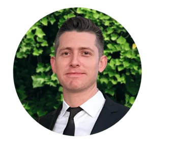

Dr. Bramley Birrer
D.D.S. — UCLA School of Dentistry
As my patient, you are not just another set of teeth; you are another conversation, another story, another friendship. By knowing who you are, I can know what your teeth mean to you, and this is where dentistry begins.
Dr. Birrer received his D.D.S. from UCLA with Outstanding Achievement in Public Health, and a B.A. in Philosophy, summa cum laude, also from UCLA. He is SMART certified with the IAOMT and works in same-day all-ceramic fillings and crowns using CEREC CAD/CAM — strong, long-lasting, natural-looking restorations without metal, without BPA, and without a second appointment.